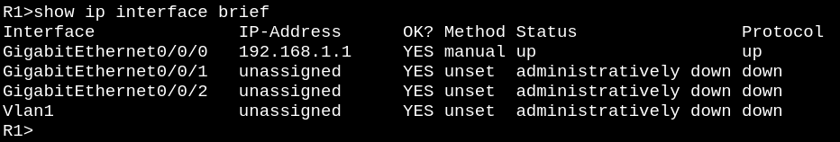
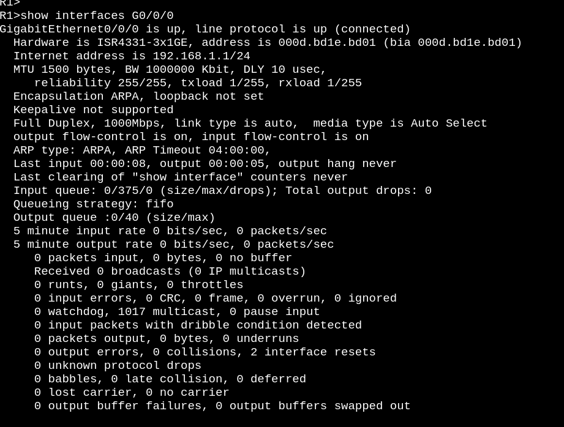
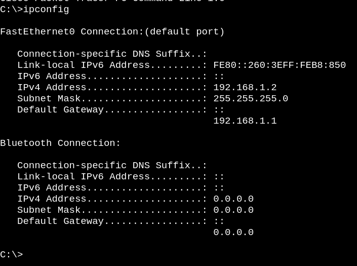
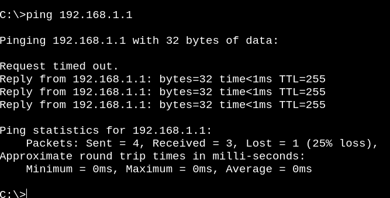
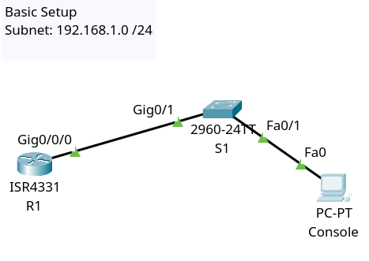

Fundamental Topic: Router Configuration
Minimal configuration for setting up a basic network with one router, switch and PC. An IP address is configured on a router and a PC with a private subnet.
Objective: Demonstrate a fundamental skill in configuring the most minimal LAN possible, in order to showcase the steps to be expanded upon later in a more developed network.
Outcome: Test the network with a ping command to ensure integrity of IP stack
- Determine private network IPv4 with appropriate subnet
- add the first IP address and subnet mask to the router using ip address command
- turn on the router interface
- Configure PC with appropriate IPv4 address and subnet mask
- Set up default gateway in PC
- Test the setup with the ping command
Steps
Here is a console connection to configure a router
Here is the ip address that is statically configured
Some details on the particular interface
Setting up a PC for the network
testing the IP stack
Here is a test of the connection and the finished typology
From here, one can add additional endpoints to the switch to make it a full LAN network. The process of configuring it is fundamentally the same as shown here. Just configure each endpoint device with an IP address and default gateway. Test with the ping tool and you have a LAN.